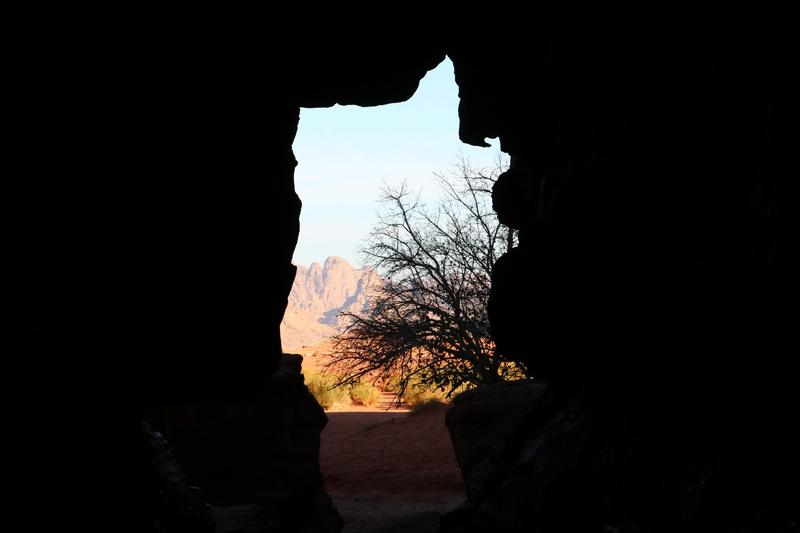
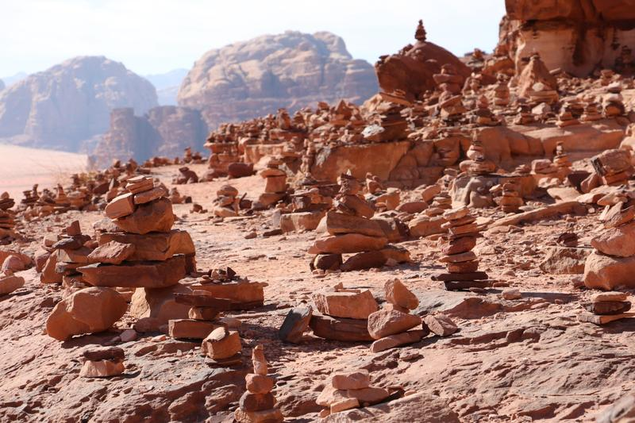

吉普车之旅与过夜
جولات بالجيب ومبيت在当地贝都因向导的带领下乘 4x4 越野车探索瓦迪拉姆，然后在我们的营地过夜。

全天吉普车之旅 + 过夜
一天游遍瓦迪拉姆：红色沙丘、峡谷和观景点，还有时间散步、攀爬和拍照。
40 JOD 起 ≈ $56每人，3 人以上详情 →

半天吉普车之旅 + 过夜
一个下午游览瓦迪拉姆最知名的景点，然后看日落、吃晚餐，在营地过夜。
35 JOD 起 ≈ $49每人，3 人以上详情 →

3 小时吉普车之旅 + 过夜
时间不多？乘车 3 小时游览沙漠中几处最美的地方，再看日落、吃晚餐，在营地过夜。
30 JOD 起 ≈ $42每人，2 人以上详情 →

白色沙漠体验 + 过夜
告别红色沙地，前往瓦迪拉姆苍白的白色沙漠，那里有奇特的岩石造型和宁静开阔的风景。
50 JOD 起 ≈ $70每人，3–6 人详情 →
山地与徒步
جبال ومسارات适合徒步和攀登爱好者：石桥、山顶，以及群山之间的长途步道。


多日探险
رحلات لعدة أيام跟随贝都因向导在沙漠中度过两到四天，深入瓦迪拉姆的宁静地带。

2 日瓦迪拉姆探险
一整天吉普车之旅，一天徒步哈什山、萨比特谷和纳格扎，营地住一晚，星空下露宿一晚。
80 JOD 起 ≈ $113每人，4 人详情 →

3 日瓦迪拉姆探险
瓦迪拉姆鲜为人知的一面：先乘吉普车游览著名景点，再前往哈什山、白色沙漠和萨比特谷的偏远山谷。
150 JOD 起 ≈ $212每人，3–4 人详情 →

4 日瓦迪拉姆沙漠徒步
在贝都因向导、后勤车辆以及负责做饭和搭建营地的团队陪同下，用四天时间徒步穿越瓦迪拉姆的腹地。
200 JOD 起 ≈ $282每人，4 人详情 →
沙漠体验
تجارب صحراوية较短的体验，可单独参加，也可加到任何行程中。


صمّم رحلتك自己组合
沙漠多项探险体验
难以取舍？告诉我们您有多少时间、想做些什么，我们为您安排行程：吉普车之旅、长途徒步、登山、骑骆驼、滑沙，或者全都来一点。
吉普车之旅长途徒步登山骑骆驼滑沙
定制行程